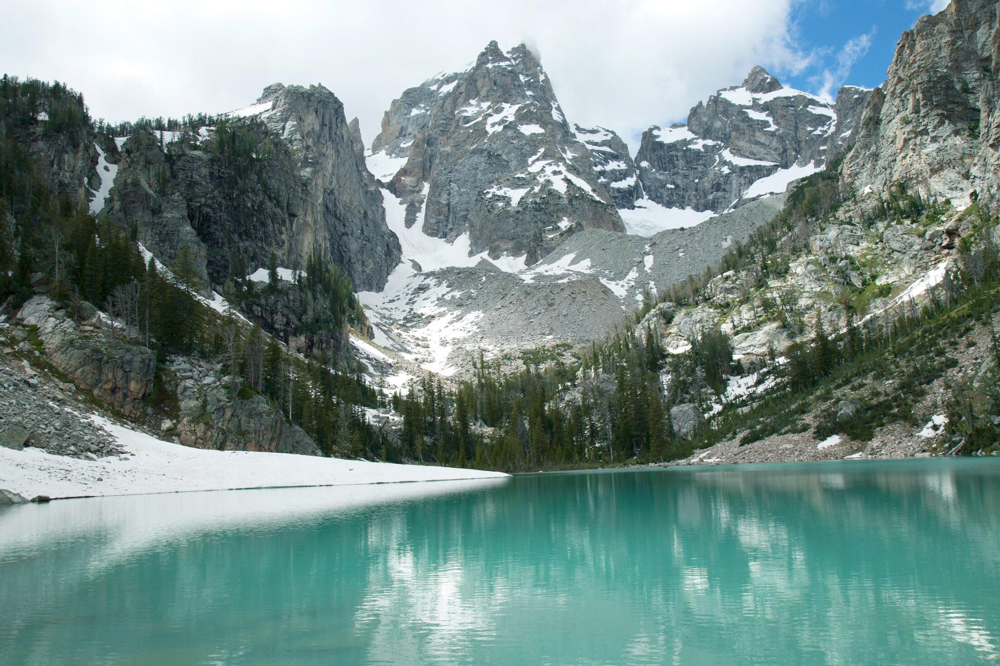

Hello Everyone: My name is Hunter Palmer and this is a little bit about me. I was born in the great state of Ohio but spent most of my life growing up in southern Arizona, but have lived in 8 states. While growing up I was an avid football player, basketball, and enjoyed everything to do with sports.
After long thought and consideration I decided to pursue a career in Global Supply Chain Management. I was first an Exercise Science major but after taking all of one chemistry class I decided that I couldn't handle taking another one and proceeded to walk to the advisment center to change to a Business Major.
While education and sports have consumed most of the formidible parts of my young life because of my family moving around so often I love the outdoors and all aspects of adventure. I have a goal to visit all 66 of the National Parks in the United States. Along with that I also love all of my trusty YETI products.
My favorite athlete Anthony Richardson
My favorite hiking spot in the Grand Tetons
Night skyline shot of my hometown, Tucson AZ
Anthony Richardson Highlights